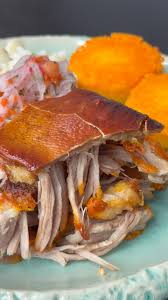
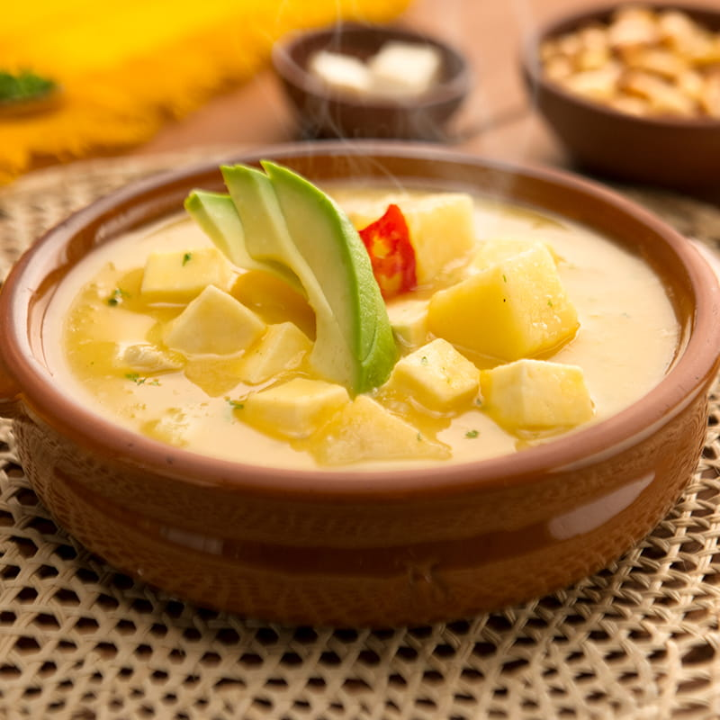

Sabores Tradicionales Quiteños
La gastronomía de Quito refleja la historia, la cultura y la calidez de su gente. Cada plato cuenta una historia que combina ingredientes ancestrales con técnicas modernas.
El hornado, uno de los platos más representativos, es un deleite que se sirve con mote, llapingachos y una sabrosa salsa de ají casero.
El locro de papa es una sopa espesa y reconfortante, elaborada con papas, queso y aguacate, ideal para las frías tardes en la capital.

Las empanadas de viento, rellenas de queso y espolvoreadas con azúcar, son un clásico de las cafeterías quiteñas.